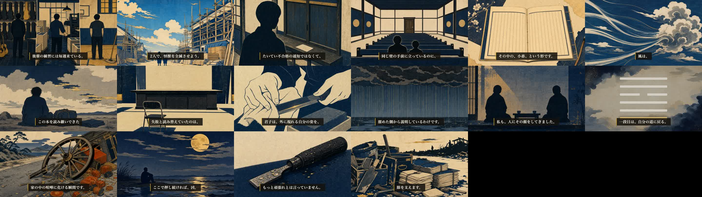

ご指示の選択肢A（幕5の作り直し＋カフカ回収の是正）を実施し、さらに採点者と読者が同じ箇所を指した「出典より強い断定」4件も直しました。機械ゲートはすべてPASS（mix警告0件）。
内側の採点（fork・採点表準拠）も 94点・両ゲート通過。読者と内側が同時に合格したのはこの回が初めてです。
勘所：5:50以降（作り直した幕5）／3:14（「注釈」の出所を初めて明示）／1:21（動機の断定→「私には見えます」）
| 前（読者が閉じた版） | 後（今回） | |
|---|---|---|
| 構成 | 9シーン・2分52秒＝六段ぜんぶを処方に翻訳 | 6シーン・1分48秒＝爻の言葉の意外さを前に |
| 「私の一手」 | 各段に散在（読者：「この人の生活アドバイス講座に変わった」） | 1シーンに2つだけ。「ここから先は、私が考えた一手です」と線を引く →読者：「古典に言わせてないのが分かって、そこで信用が戻った」 |
| 前に出したもの | やめること／始めることの列挙 | 三段目「夢を追う話が、家の中の喧嘩に化ける瞬間」（読者：刺さった）／六段目「降ったあとに押すな」 |
| カフカの回収 | 都合の良い部分だけで着地（読者：「証拠のいちばん大事なところを伏せてる」） | 「このあと彼の身に何が起きるかは、作品を観てください」＝伏せを明示してから、その前の事実だけで着地 |
| 幕3の引っ張り | 「最後にお話しします」×1（読者：「じゃあ今の九分は何なんだ」） | 削除 |
内側の採点者と読者が同じ穴を指していました（読者：「その注釈って誰が書いたやつなんですか」＝唯一の権威借り指摘）。証拠で語る回なのでここは妥協せず直しました。是正後の帰属検査＝「出典より強い断定は不検出」（独立採点）。
| 「この本が名指しするのは、外の壁ではありません」 | →「外の壁も動かないまま、いちばん近い人との会話が、先に止まる」（dbは外的条件も明記） |
| 「降ったあとがいちばん危ない、と書いてある」 | →「降ったあとに押すな、とだけ書いてあります」（最上級はdbに無い） |
| 「いちばん離れにくい場所を選んでいます」 | →「選んだように、私には見えます」（動機の断定→語り手の観察） |
| 「注釈は、こう書きます」 | →「注釈というのは、この本を読み継いできた人たちが付けた読み方です。そこには…」（出所を1回だけ明示） |
| シーン境界の黒落ち | ✅ 26境界すべて無し |
| 音のピーク / 幕間BGM | ✅ -3.8dB / -34.9dB |
| 尺 | ✅ 486.5秒＝8分06秒（期待487.5秒） |
| 発音（実mora照合） | ✅ FAIL 0 |
| 字幕の同期・全文一致 | ✅ 27シーン |
| 幕配分 | ✅ 幕1 35秒／観察17.8%／種明かし2分57秒／処方箋1分48秒（1.5-3分内） |
| script:ready / visuals:ready | ✅ / ✅（独立採点94点・両ゲート通過） |

| 四爻・五爻だけ行動翻訳が無い（引用と短い言い換えのみ） | いずれも合格ライン内の減点。読者ゲートでも「四段目・五段目は正直ちょっと飛ばした」と同じ場所が出ています。8/4期日の申し送りタスクに追記済み＝次話の型づくりで回収 |
| 「作品を観てください」が一瞬宣伝の匂い（読者） | |
| H64オープンループが1本のみ（物証・出口の予告が未張り） | |
| 45字超の文3件・「二つだけにします」の列挙型 |
残タスク＝サムネ90点化 → long-hook/titleの証跡登録 → 8/11 04:00の予約。予約は「非公開＋予約投稿」で上げ、公開ボタンはあなたの操作です。
時刻か言い回しで指定してください。
証跡：読者ゲート analytics/blind-reader.jsonl（66→84）／内側採点94点（essay-script-2026-08-04b）／mix警告0／final-video run chr_20260804105023494…。